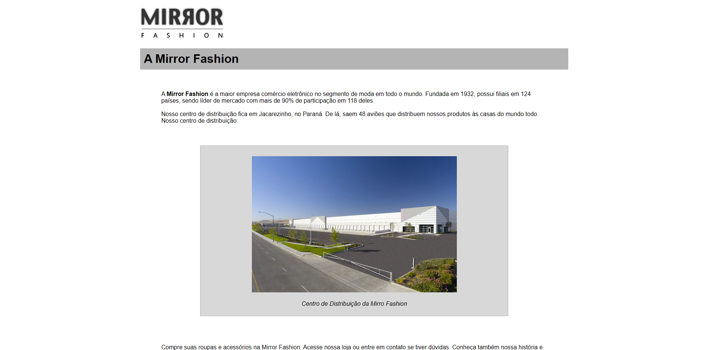

O objeto de trabalho desenvolvido foi o site "Mirror Fashion", a interface de uma loja de comércio eletrônico fictícia voltada para o segmento de moda. O projeto baseou-se na técnica de reprodução guiada: a partir de um mockup (modelo visual) pré-estabelecido pelo professor e dos recursos visuais (textos e imagens) disponibilizados, o objetivo foi construir a página inteira garantindo fidelidade ao design proposto. Para a consecução deste projeto, foram empregadas as tecnologias basilares do desenvolvimento web front-end: HTML e CSS. O HTML (HyperText Markup Language), ou Linguagem de Marcação de Hipertexto, é o bloco de construção mais básico da web, atuando como uma linguagem de marcação que define o significado, a semântica e a estruturação do conteúdo de uma página. Em complemento, utilizou-se o CSS (Cascading Style Sheets), ou Folhas de Estilo em Cascata, que é uma linguagem de estilo utilizada para descrever a apresentação do documento. Enquanto o HTML estrutura os dados, o CSS é estritamente responsável por controlar os aspectos visuais e estéticos da aplicação, como o layout, as cores, a tipografia e o posicionamento dos elementos na tela.
